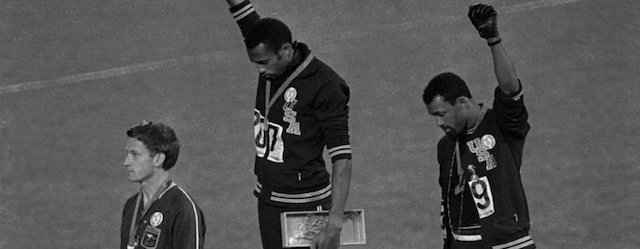
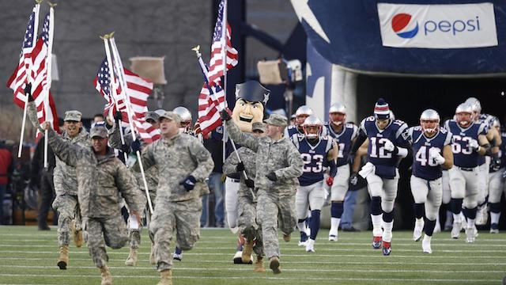
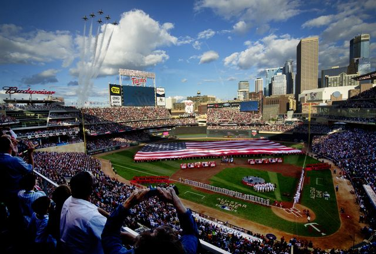

2017-09-27 08:00
Puerto Rico is rapidly turning into another Katrina, and North Korea may have justifiably construed Donald Trump’s reckless threats to “totally destroy” its 25 million citizens as an act of war. But as Rome burns the president is doubling down on his favorite pastime: race-baiting.
While chaos swirls all around, the White Supremacist-in-Chief seems unusually miffed this week by insufficient displays of patriotic fervor at NFL games. Oh, one more trifling detail – it’s insufficient patriotism by black players.
Trump called NFL players who “take a knee” to protest systemic racism in the United States “sons of bitches” and wants them to be fired for exercising their First Amendment rights. Teresa Kaepernick, the mother of former San Francisco 49er Colin Kaepernick, who started taking the “knee,” quipped, “I guess that makes me a proud bitch.” But when pressed on why black athletes were protesting Trump denied it had anything to do with race; it was all about patriotism and respect, he said.
Meanwhile, Trump World echoed their Dear Leader. Any criticisms of the country were fireable and deportable offenses. Former NASCAR champion Richard Petty told the Associated Press that anyone on his team protesting during the national anthem would be fired. “Anybody that don’t stand up for the anthem oughta be out of the country. Period. What got ’em where they’re at? The United States.”
But regardless of how Trump chooses to frame the controversy, protests in the NFL – and now also basketball and baseball league – most certainly are about race. Especially under the presidency of a president ESPN anchor Jemele Hill unapologetically labeled a “white supremacist.” While approximately 75% of both NFL and NBA players are black, NASCAR fans are 80% white – and apparently unfamiliar with the First Amendment.
Former NFL player John Elway, now head of operations for the Denver Broncos and a Trump supporter, attempted a more conciliatory tone: “Hopefully as we go forward we can start concentrating on football a little bit more. Take the politics out of football. But I think that last week was a good show of unity by the NFL and hopefully this week we can move forward.”
Elway’s lament was widely echoed by many in White America: sports are sports and players have no business taking political positions on or off the field. Football is just a game.

But players lead lives off the field. Just ask Seattle Seahawks defensive end Michael Bennett, who “just happens to be black.” Three weeks ago, in Las Vegas for the McGregor-Mayweather fight, Bennett was walking back to his hotel when he fled from the sounds of gunfire – along with a stampede of other pedestrians. But the Las Vegas police singled out Bennett, threatened to "blow [his] f*cking head off" and used excessive force. Bennett was lucky. He wasn’t killed.
And the sordid tale of Donald Sterling reminds basketball players and their fans how inseparable sports can be from real life.
CBS commentator Rob Long expressed a typical sentiment when he wrote: “Recently political topics have invaded sports. Athletes have used their celebrity to voice their political agendas. They’ve used the sports forum to speak out against political and social issues as well as race. This is a growing trend that isn’t losing momentum. The networks are looking for content and as long as athletes provide them with it, they will use it. It’s the gift and the curse.”
But Long (and Elway) are way off the mark. Since the Olympics were first celebrated 2600 years ago, sports have always been political. Ancient Sparta and Nazi Germany certainly approached competitions seriously. National pride and dominance is always at stake. And anything that drowns out the nationalist narrative – for example, a player making his own statement – is unacceptable. Recall the 1968 Summer Olympics, when Tommie Smith and John Carlos raised their fists in black gloves, wearing black socks.
The two were ejected from the games for protesting institutional racism, and they were booed by American fans and fellow Olympians: “It is very discouraging to be in a team with white athletes. On the track you are Tommie Smith, the fastest man in the world, but once you are in the dressing rooms you are nothing more than a dirty Negro.”
Not much has changed since then.

The unforgivable sin that Smith and Carlos committed was eclipsing a nationalistic show of the Stars and Stripes and the playing of the American national anthem. And nationalism can’t tolerate even quiet criticism.
We often talk about the police being militarized, but since 9/11, especially, professional sports teams and Hollywood have lined up to serve the U.S. military in unexpected ways.
Two years ago Arizona senators McCain and Flake published a report on how the Pentagon pays sports teams tens of millions of dollars for patriotic displays. Stadium-sized flags, military flyovers, parachuting into the stadium, color guards, anthems, and jumbotron reunions with servicemen have become the norm for the NFL.
You’d be hard-pressed to describe the difference between one of these hyper-patriotic events and a similar North Korean spectacle. But these are engineered by the Pentagon and not simple acts of patriotism by franchise owners. As Jeff Flake explained, “What we take issue with is the average fan thinking teams are doing this on behalf of the military.”
McCain’s and Flake’s 145-page report lists contributions to 18 NFL teams, 10 MLB teams, eight NBA teams, six NHL teams, eight soccer teams, as well as NASCAR, Iron Dog and several college football programs. The Atlanta Falcons pocketed $879,000, Trump Donor Robert Kraft’s New England Patriots received $700,000 and the Buffalo Bills $650,000. And all this represents only a fraction of the amount the DOD has spent on sports marketing. “In all, the military services reported $53 million in spending on marketing and advertising contracts with sports teams between 2012 and 2015.” The Army alone spends $10 million on the NFL.

Is it patriotism when you’ve been manipulated?
But NASCAR took in the biggest haul, $1,560,000 in 2015. This included personal appearances by Aric Almirola and [the aforementioned] Richard Petty, as well as 20 Richard Petty Driving Experience ride-alongs. In 2011 NASCAR presented the largest USO “Military Village” Expo ever in Dover, Delaware – incidentally (or perhaps appropriately) home to the largest military mortuary in the country.
Who says that the U.S. government can’t do anything right? When it comes to militarism and jingoistic propaganda, no one does it better. Andrew Bacevich describes how all the moving parts of an “authentic” patriotic experience come together – and it’s enough to make anyone take a knee:
Fenway Park, Boston, July 4, 2011. On this warm summer day, the Red Sox will play the Toronto Blue Jays. First come pre-game festivities, especially tailored for the occasion. The ensuing spectacle – a carefully scripted encounter between the armed forces and society – expresses the distilled essence of present-day American patriotism. A masterpiece of contrived spontaneity, the event leaves spectators feeling good about their baseball team, about their military, and not least of all about themselves – precisely as it was meant to do.
In this theatrical production, the Red Sox provide the stage, and the Pentagon the props. In military parlance, it is a joint operation. In front of a gigantic American flag draped over the left-field wall, an Air Force contingent, clad in blue, stands at attention. To carry a smaller version of the Stars and Stripes onto the playing field, the Navy provides a color guard in crisp summer whites. The United States Marine Corps kicks in with a choral ensemble that leads the singing of the national anthem. As the anthem’s final notes sound, four U. S. Air Force F-15C Eagles scream overhead. The sellout crowd roars its approval.
But there is more to come. “On this Independence Day,” the voice of the Red Sox booms over the public address system, “we pay a debt of gratitude to the families whose sons and daughters are serving our country.” On this particular occasion the designated recipients of that gratitude are members of the Lydon family, hailing from Squantum, Massachusetts. Young Bridget Lydon is a sailor – Aviation Ordnanceman Airman is her official title – serving aboard the carrier USS Ronald Reagan, currently deployed in support of the Afghanistan War, now in its 10th year.
